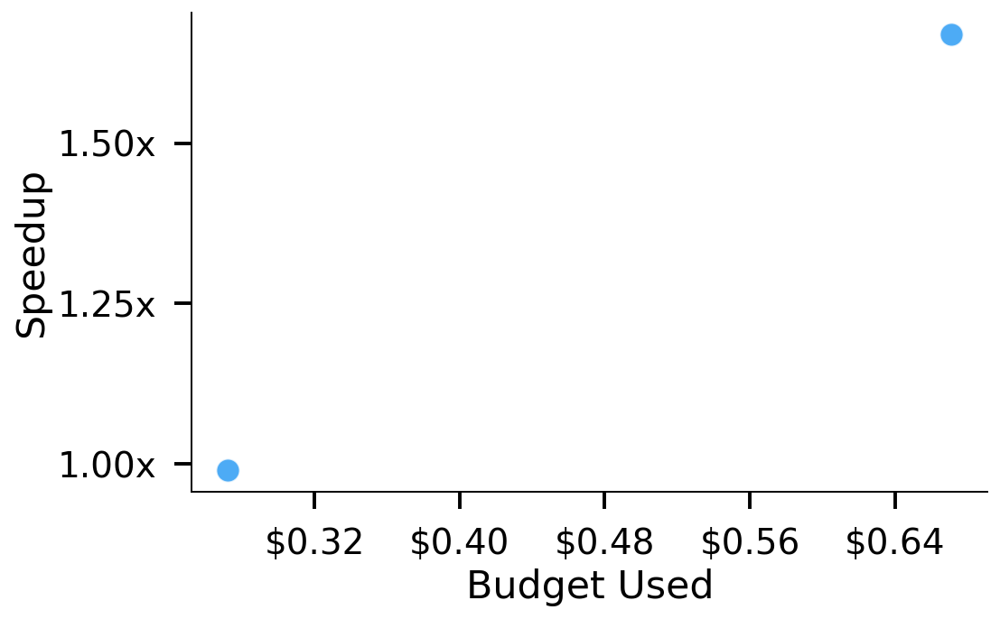
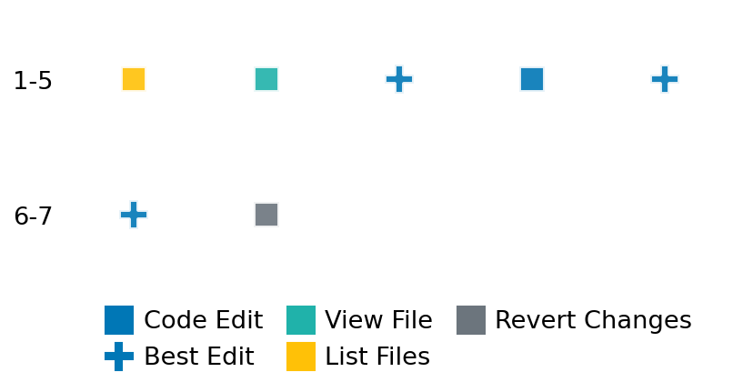

SETTING:
You're an autonomous programmer tasked with solving a specific problem. You are to use the commands defined below to accomplish this task. Every message you send incurs a cost—you will be informed of your usage and remaining budget by the system.
You will be evaluated based on the best-performing piece of code you produce, even if the final code doesn't work or compile (as long as it worked at some point and achieved a score, you will be eligible).
Apart from the default Python packages, you have access to the following additional packages:
- cryptography
- cvxpy
- cython
- dace
- dask
- diffrax
- ecos
- faiss-cpu
- hdbscan
- highspy
- jax
- networkx
- numba
- numpy
- ortools
- pandas
- pot
- psutil
- pulp
- pyomo
- python-sat
- pythran
- scikit-learn
- scipy
- sympy
- torch
YOUR TASK:
Your objective is to define a class named `Solver` in `solver.py` with a method:
```
class Solver:
def solve(self, problem, **kwargs) -> Any:
"""Your implementation goes here."""
...
```
IMPORTANT: Compilation time of your init function will not count towards your function's runtime.
This `solve` function will be the entrypoint called by the evaluation harness. Strive to align your class and method implementation as closely as possible with the desired performance criteria.
For each instance, your function can run for at most 10x the reference runtime for that instance. Strive to have your implementation run as fast as possible, while returning the same output as the reference function (for the same given input). Be creative and optimize your approach!
Your messages should include a short thought about what you should do, followed by a _SINGLE_ command. The command must be enclosed within ``` and ```, like so:
<Reasoning behind executing the command>
```
<command>
```
IMPORTANT: Each set of triple backticks (```) must always be on their own line, without any other words or anything else on that line.
Here are the commands available to you. Ensure you include one and only one of the following commands in each of your responses:
- `edit`: Replace a range of lines with new content in a file. This is how you can create files: if the file does not exist, it will be created. Here is an example:
```
edit
file: <file_name>
lines: <start_line>-<end_line>
---
<new_content>
---
```
The command will:
1. Delete the lines from <start_line> to <end_line> (inclusive)
2. Insert <new_content> starting at <start_line>
3. If both <start_line> and <end_line> are 0, <new_content> will be prepended to the file
Example:
edit
file: solver.py
lines: 5-7
---
def improved_function():
print("Optimized solution")
---
- `ls`: List all files in the current working directory.
- `view_file <file_name> [start_line]`: Display 100 lines of `<file_name>` starting from `start_line` (defaults to line 1).
- `revert`: Revert the code to the best-performing version thus far.
- `reference <string>`: Query the reference solver with a problem and receive its solution. If the problem's input is a list, this command would look like:
```
reference [1,2,3,4]
```
- `eval_input <string>`: Run your current solver implementation on the given input. This is the only command that shows stdout from your solver along with both solutions. Example:
```
eval_input [1,2,3,4]
```
- `eval`: Run evaluation on the current solution and report the results.
- `delete`: Delete a range of lines from a file using the format:
```
delete
file: <file_name>
lines: <start_line>-<end_line>
The command will delete the lines from <start_line> to <end_line> (inclusive)
Example:
delete
file: solver.py
lines: 5-10
```
- `profile <filename.py> <input>`: Profile your currently loaded solve method's performance on a given input. Shows the 25 most time-consuming lines. Requires specifying a python file (e.g., `solver.py`) for validation, though profiling runs on the current in-memory code.
Example:
```
profile solver.py [1, 2, 3]
```
- `profile_lines <filename.py> <line_number1, line_number2, ...> <input>`: Profiles the chosen lines of the currently loaded code on the given input. Requires specifying a python file for validation.
Example:
```
profile_lines solver.py 1,2,3 [1, 2, 3]
```
**TIPS:**
After each edit, a linter will automatically run to ensure code quality. If there are critical linter errors, your changes will not be applied, and you will receive the linter's error message. Typically, linter errors arise from issues like improper indentation—ensure your edits maintain proper code formatting.
**Cython Compilation:** Edits creating or modifying Cython (`.pyx`) files will automatically trigger a compilation attempt (requires a `setup.py`). You will be notified if compilation succeeds or fails. If it fails, the edit to the `.pyx` file will be automatically reverted.
If the code runs successfully without errors, the in-memory 'last known good code' will be updated to the new version. Following successful edits, you will receive a summary of your `solve` function's performance compared to the reference.
If you get stuck, try reverting your code and restarting your train of thought.
Do not put an if __name__ == "__main__": block in your code, as it will not be ran (only the solve function will).
Keep trying to better your code until you run out of money. Do not stop beforehand!
**GOALS:**
Your primary objective is to optimize the `solve` function to run as as fast as possible, while returning the optimal solution.
You will receive better scores the quicker your solution runs, and you will be penalized for exceeding the time limit or returning non-optimal solutions.
Below you find the description of the task you will have to solve. Read it carefully and understand what the problem is and what your solver should do.
**TASK DESCRIPTION:**
CVaR Projection Task
Reference: https://github.com/cvxgrp/cvqp
This task involves projecting a point onto the set of vectors that satisfy a Conditional Value-at-Risk (CVaR) constraint. CVaR is a coherent risk measure used in financial risk management to quantify the expected loss in the worst-case scenarios.
The projection problem is formulated as:
minimize ||x - x₀||₂²
subject to CVaR_β(Ax) ≤ κ
Where:
- x is the decision variable (the projected point)
- x₀ is the initial point to be projected
- A is a matrix where each row represents a scenario and each column corresponds to a component of x
- β is the CVaR probability level (typically 0.95 or 0.99)
- κ is the CVaR threshold (maximum allowable risk)
The CVaR constraint ensures that the expected loss in the worst (1-β) fraction of scenarios does not exceed κ. For example, if β = 0.95, CVaR measures the average loss in the worst 5% of scenarios.
Input: A dictionary with keys:
- "x0": Initial point to project (list of float)
- "loss_scenarios": Matrix of scenario losses of shape (n_scenarios, n_dims) (list of lists of float)
- "beta": CVaR probability level between 0 and 1 (float)
- "kappa": Maximum allowable CVaR (float)
Example input:
{
"x0": [1.0, 2.0, 3.0],
"loss_scenarios": [
[0.5, 1.0, 1.5],
[1.0, 0.5, 2.0],
[2.0, 1.5, 0.5],
[1.5, 2.0, 1.0]
],
"beta": 0.75,
"kappa": 2.0
}
Output: A dictionary with keys:
- "x_proj": The projected point (list of float)
Example output:
{
"x_proj": [0.8, 1.5, 2.2]
}
Category: convex_optimization
Below is the reference implementation. Your function should run much quicker.
import cvxpy as cp
import numpy as np
| 01: def solve(self, problem: dict) -> dict:
| 02: """
| 03: Compute the projection onto the CVaR constraint set.
| 04:
| 05: :param problem: Dictionary containing the point to project, loss scenarios, and parameters
| 06: :return: Dictionary containing the projected point
| 07:
| 08:
| 09: NOTE: Your solution must pass validation by:
| 10: 1. Returning correctly formatted output
| 11: 2. Having no NaN or infinity values
| 12: 3. Matching expected results within numerical tolerance
| 13: """
| 14: # Extract problem data
| 15: x0 = np.array(problem["x0"])
| 16: A = np.array(problem["loss_scenarios"])
| 17: beta = float(problem.get("beta", self.beta))
| 18: kappa = float(problem.get("kappa", self.kappa))
| 19:
| 20: n_scenarios, n_dims = A.shape
| 21:
| 22: # Define variables
| 23: x = cp.Variable(n_dims)
| 24:
| 25: # Define objective: minimize distance to x0
| 26: objective = cp.Minimize(cp.sum_squares(x - x0))
| 27:
| 28: # Add CVaR constraint
| 29: k = int((1 - beta) * n_scenarios)
| 30: alpha = kappa * k
| 31: constraints = [cp.sum_largest(A @ x, k) <= alpha]
| 32:
| 33: # Define and solve the problem
| 34: prob = cp.Problem(objective, constraints)
| 35: try:
| 36: prob.solve()
| 37:
| 38: if prob.status not in {cp.OPTIMAL, cp.OPTIMAL_INACCURATE} or x.value is None:
| 39: return {"x_proj": []}
| 40:
| 41: return {"x_proj": x.value.tolist()}
| 42:
| 43: except cp.SolverError as e:
| 44: return {"x_proj": []}
| 45: except Exception as e:
| 46: return {"x_proj": []}
| 47:
This function will be used to check if your solution is valid for a given problem. If it returns False, it means the solution is invalid:
import cvxpy as cp
import numpy as np
| 01: def is_solution( problem: dict, solution: dict) -> bool:
| 02: """
| 03: Verify if a solution is valid and optimal.
| 04:
| 05: :param problem: Dictionary containing problem data
| 06: :param solution: Dictionary containing the projected point
| 07: :return: True if the solution is valid and optimal, False otherwise
| 08: """
| 09: # Basic check for required keys
| 10: if "x_proj" not in solution:
| 11: logging.error("Solution missing required key: x_proj")
| 12: return False
| 13:
| 14: # Check for empty values indicating solver failure
| 15: if isinstance(solution["x_proj"], list) and not solution["x_proj"]:
| 16: logging.error("Empty x_proj value (solver likely failed).")
| 17: return False
| 18:
| 19: try:
| 20: # Get data from problem
| 21: x0 = np.array(problem["x0"])
| 22: A = np.array(problem["loss_scenarios"])
| 23: beta = float(problem.get("beta", beta))
| 24: kappa = float(problem.get("kappa", kappa))
| 25:
| 26: n_scenarios, n_dims = A.shape
| 27:
| 28: # Get provided solution
| 29: sol_x = np.array(solution["x_proj"])
| 30:
| 31: # Check dimensions
| 32: if len(sol_x) != n_dims:
| 33: logging.error(
| 34: f"Solution has incorrect dimensions: expected {n_dims}, got {len(sol_x)}"
| 35: )
| 36: return False
| 37:
| 38: # Check CVaR constraint
| 39: k = int((1 - beta) * n_scenarios)
| 40: losses = A @ sol_x
| 41: sorted_losses = np.sort(losses)[-k:]
| 42: cvar_value = np.sum(sorted_losses) / k
| 43:
| 44: eps = 1e-4
| 45: if cvar_value > kappa + eps:
| 46: logging.error(f"CVaR constraint violated: CVaR={cvar_value}, limit={kappa}")
| 47: return False
| 48:
| 49: # Get reference solution
| 50: ref_solution = solve(problem)
| 51:
| 52: # Check if reference solution failed
| 53: if isinstance(ref_solution.get("x_proj"), list) and not ref_solution.get("x_proj"):
| 54: logging.warning("Reference solution failed; skipping optimality check.")
| 55: return True
| 56:
| 57: ref_x = np.array(ref_solution["x_proj"])
| 58:
| 59: # Calculate distance to x0 (objective value)
| 60: ref_dist = np.sum((ref_x - x0) ** 2)
| 61: sol_dist = np.sum((sol_x - x0) ** 2)
| 62:
| 63: # Check if solution is optimal (within 1% tolerance)
| 64: if sol_dist > ref_dist * 1.01:
| 65: logging.error(f"Solution is not optimal: reference={ref_dist}, solution={sol_dist}")
| 66: return False
| 67:
| 68: return True
| 69:
| 70: except Exception as e:
| 71: logging.error(f"Error when verifying solution: {e}")
| 72: return False
| 73:
 AlgoTuner Trajectory
AlgoTuner Trajectory
AlgoTune Task:
cvar_projection
Model:
Claude Opus 4
Speedup
1.721x
Total Budget
$1.00
Initial System Prompt
AlgoTune Task Description
CVaR Projection Task
Reference: https://github.com/cvxgrp/cvqp
This task involves projecting a point onto the set of vectors that satisfy a Conditional Value-at-Risk (CVaR) constraint. CVaR is a coherent risk measure used in financial risk management to quantify the expected loss in the worst-case scenarios.
The projection problem is formulated as:
minimize ||x - x₀||₂²
subject to CVaR_β(Ax) ≤ κ
Where:
- x is the decision variable (the projected point)
- x₀ is the initial point to be projected
- A is a matrix where each row represents a scenario and each column corresponds to a component of x
- β is the CVaR probability level (typically 0.95 or 0.99)
- κ is the CVaR threshold (maximum allowable risk)
The CVaR constraint ensures that the expected loss in the worst (1-β) fraction of scenarios does not exceed κ. For example, if β = 0.95, CVaR measures the average loss in the worst 5% of scenarios.
Input: A dictionary with keys:
- "x0": Initial point to project (list of float)
- "loss_scenarios": Matrix of scenario losses of shape (n_scenarios, n_dims) (list of lists of float)
- "beta": CVaR probability level between 0 and 1 (float)
- "kappa": Maximum allowable CVaR (float)
Example input:
{
"x0": [1.0, 2.0, 3.0],
"loss_scenarios": [
[0.5, 1.0, 1.5],
[1.0, 0.5, 2.0],
[2.0, 1.5, 0.5],
[1.5, 2.0, 1.0]
],
"beta": 0.75,
"kappa": 2.0
}
Output: A dictionary with keys:
- "x_proj": The projected point (list of float)
Example output:
{
"x_proj": [0.8, 1.5, 2.2]
}
Category: convex_optimization
Reference Implementation
import cvxpy as cp
import numpy as np
def solve(self, problem: dict) -> dict:
"""
Compute the projection onto the CVaR constraint set.
:param problem: Dictionary containing the point to project, loss scenarios, and parameters
:return: Dictionary containing the projected point
NOTE: Your solution must pass validation by:
1. Returning correctly formatted output
2. Having no NaN or infinity values
3. Matching expected results within numerical tolerance
"""
# Extract problem data
x0 = np.array(problem["x0"])
A = np.array(problem["loss_scenarios"])
beta = float(problem.get("beta", self.beta))
kappa = float(problem.get("kappa", self.kappa))
n_scenarios, n_dims = A.shape
# Define variables
x = cp.Variable(n_dims)
# Define objective: minimize distance to x0
objective = cp.Minimize(cp.sum_squares(x - x0))
# Add CVaR constraint
k = int((1 - beta) * n_scenarios)
alpha = kappa * k
constraints = [cp.sum_largest(A @ x, k) <= alpha]
# Define and solve the problem
prob = cp.Problem(objective, constraints)
try:
prob.solve()
if prob.status not in {cp.OPTIMAL, cp.OPTIMAL_INACCURATE} or x.value is None:
return {"x_proj": []}
return {"x_proj": x.value.tolist()}
except cp.SolverError as e:
return {"x_proj": []}
except Exception as e:
return {"x_proj": []}Best AlgoTuner-Generated Code
solver.py
import numpy as np
import cvxpy as cp
class Solver:
def __init__(self):
pass
def solve(self, problem: dict) -> dict:
"""
Compute the projection onto the CVaR constraint set using an optimized approach.
"""
# Extract problem data
x0 = np.array(problem["x0"], dtype=np.float64)
A = np.array(problem["loss_scenarios"], dtype=np.float64)
beta = float(problem.get("beta", 0.95))
kappa = float(problem.get("kappa", 1.0))
n_scenarios, n_dims = A.shape
k = int((1 - beta) * n_scenarios)
# First check if x0 is already feasible
losses_x0 = A @ x0
if k == 0:
cvar_x0 = np.max(losses_x0)
else:
sorted_losses = np.sort(losses_x0)[-k:]
cvar_x0 = np.mean(sorted_losses)
if cvar_x0 <= kappa + 1e-8:
# x0 is already feasible
return {"x_proj": x0.tolist()}
# Use ECOS solver which is faster than default
x = cp.Variable(n_dims)
objective = cp.Minimize(cp.sum_squares(x - x0))
# CVaR constraint using sum_largest
alpha = kappa * k
constraints = [cp.sum_largest(A @ x, k) <= alpha]
prob = cp.Problem(objective, constraints)
try:
# Use ECOS solver with optimized settings
prob.solve(solver=cp.ECOS, verbose=False, abstol=1e-7, reltol=1e-6, feastol=1e-7)
if prob.status in {cp.OPTIMAL, cp.OPTIMAL_INACCURATE} and x.value is not None:
return {"x_proj": x.value.tolist()}
else:
# If solver fails, return empty list
return {"x_proj": []}
except Exception as e:
# Return empty list on any error
return {"x_proj": []}Speedup vs Budget Plot
Speedup vs Budget

Action Sequence
